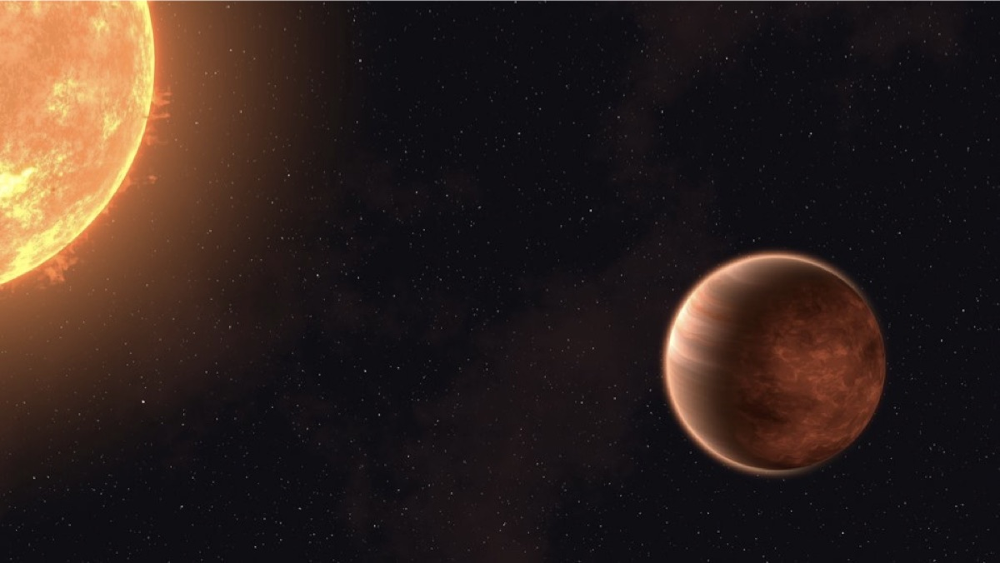
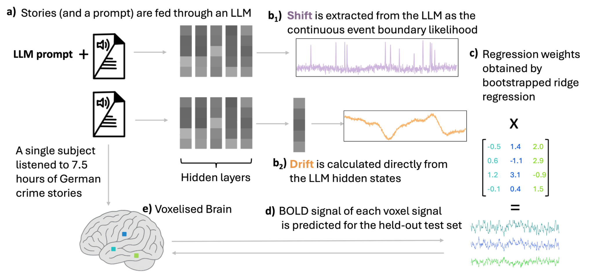
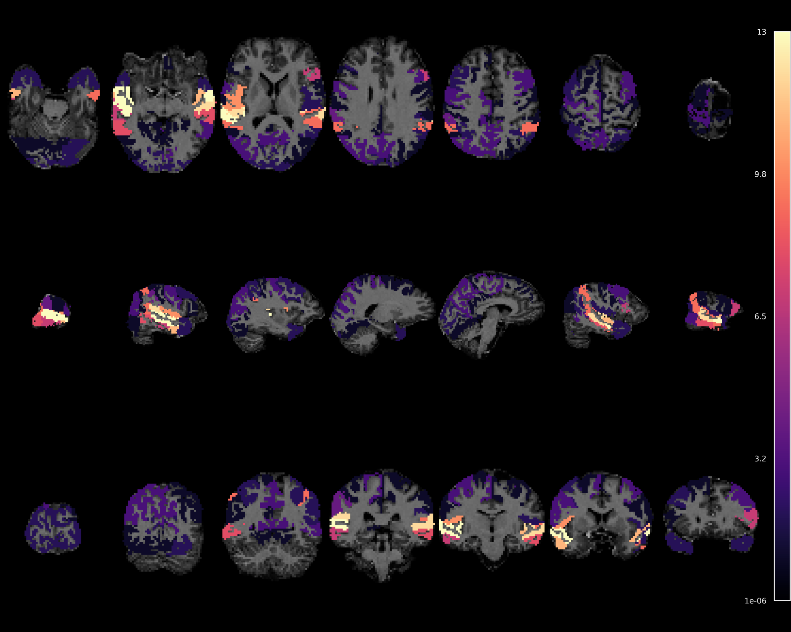
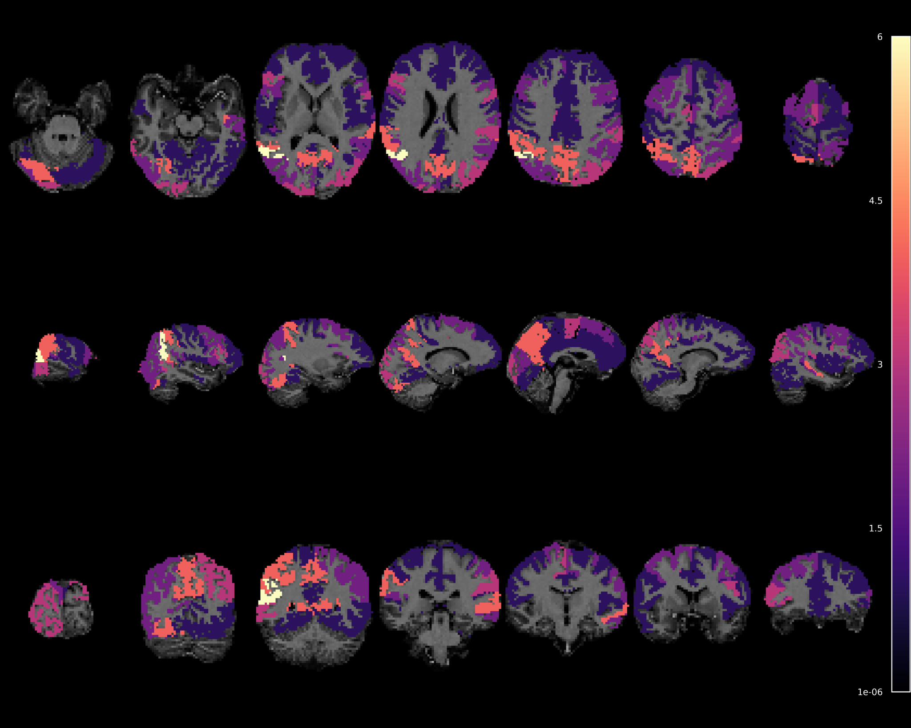
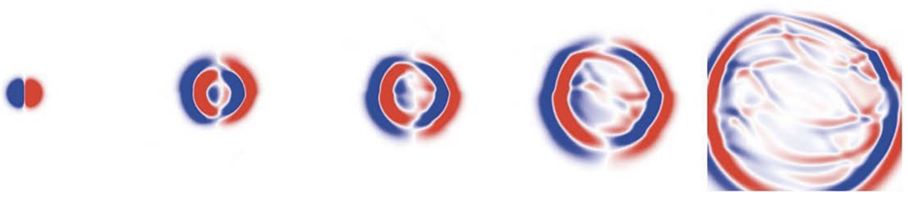

Research
What I work on
I build differentiable methods that respect the physics of the systems they describe, from planetary atmospheres to seismic waves to the human brain.
PhD · ongoing
Exoplanet atmospheres with JWST
The James Webb Space Telescope has transformed the study of exoplanet atmospheres: for the first time we can measure the composition of the air on planets hundreds of light-years away. But turning raw JWST measurements into trustworthy statements about an atmosphere is a delicate chain of inference. That chain is the subject of my PhD.
I develop end-to-end differentiable, physics-based methods for analysing JWST observations of transiting exoplanets, with a focus on making the resulting atmospheric constraints more reliable. More details will come with upcoming publications. In the meantime, my interactive explainer on transmission spectroscopy covers the foundations this work builds on.

HomanLab · Zürich
How the brain follows a story

At the HomanLab within the Psychiatric University Hospital of Zürich, I explored how our brains follow the flow of stories. Working with a language model, we distilled two simple signals from narratives: a drift signal capturing the gradual build-up of meaning, and a shift signal that spikes when the story moves to a new event or scene.
Compared against high-resolution fMRI recordings of a volunteer listening to crime stories, the burst-like shift signal lit up the brain's speech and hearing centres, while the slow drift signal was strongest in the default-mode network, in regions like the angular gyrus and precuneus that support memory and imagination. Auditory areas mark event boundaries; broader networks track the slow evolution of context.


Master's thesis · ETH Zürich
Physics-informed neural networks for seismology
My master's thesis investigated physics-informed neural networks (PINNs) for solving the elastic wave equation, which describes how seismic waves travel through the Earth. By embedding wave physics directly into the architecture, using custom wavelet and plane-wave layers with encoder and decoder components, the networks were roughly twice as accurate as standard PINNs.
Conditioning the networks on the seismic source location lets them infer the wavefield for countless source positions in a single forward pass, dramatically faster than traditional finite-difference solvers. The thesis was featured in the British Seismology Meeting 2024 report in Astronomy & Geophysics.

Publications
Full list on Google Scholar.